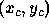
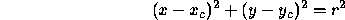
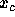

| Intersecting Circles |
The equation of a circle with radius r and center  is

Write a program that compares two circles to see if they intersect and, if they do, computes the points of intersection. (There can be 1, 2, or and infinite number of such points).
The input to this program will consist of a pair number of lines. Each two lines represent a intersection problem. Each line will contain 3 real numbers constituting the  , and r parameters for one circle.
For each problem, the output should be the words "NO INTERSECTION" if the circles do not intersect.
When they have an infinite number of intersection points, the output should be the words "THE CIRCLES ARE THE SAME"
If they do intersect at 1 or 2 points, the output should be a line with one or two pairs, respectively, of real numbers giving the x and y coordinates of any point of intersection. Pairs must be sorted first by their x coordinate and when these are equal by the y coordinate.
Each pair is to be printed in parenthesis with numbers accurately rounded to three digits to the right of the decimal point, as the sample below.
0.0 0.0 1.0 3.0 0.0 1.0 0.0 0.0 1.0 0.0 0.0 1.0 0.0 0.0 1.0 1.0 0.0 1.0
NO INTERSECTION THE CIRCLES ARE THE SAME (0.500,-0.866)(0.500,0.866)